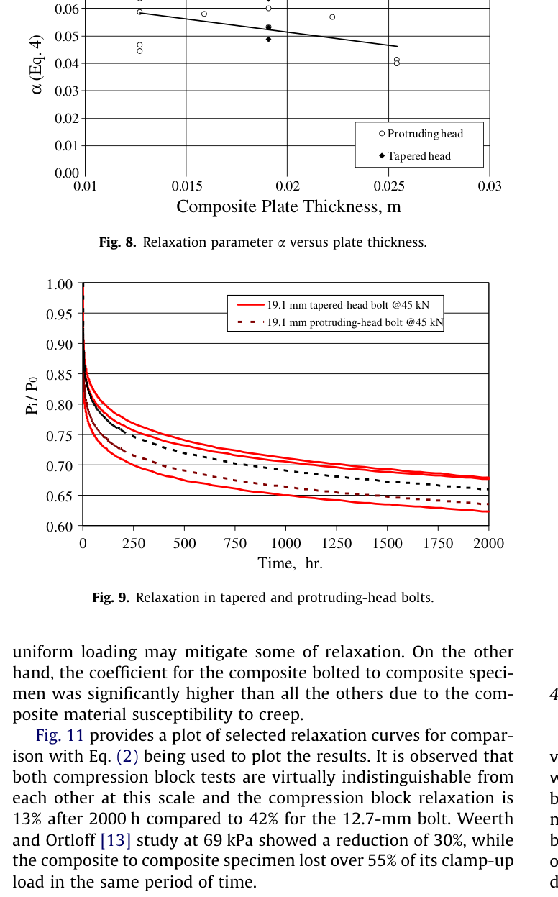
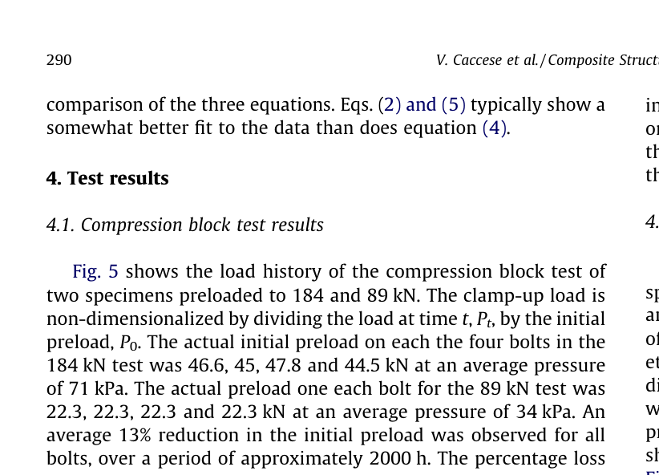

Caccese 2009 — estudo de caso— case study
Figura do artigoPaper figure


Figura(s) originais do artigo (recorte do PDF) — a fonte dos pontos que foram digitalizados.Original figure(s) from the paper (PDF crop) — the source of the digitized points.
Condições do ensaioTest conditions
| ReferênciaReference | Caccese et al. (2009). Compos. Struct. 89:285-293 · doi:10.1016/j.compstruct.2008.07.031 |
| ParafusoBolt | 1/2-13 UNC, 3/4-10 UNC |
| Pré-carga F0Preload F0 | 22–46 kN |
| AmplitudeAmplitude | — |
| FrequênciaFrequency | 0.000278 Hz |
| Família / nº de curvasFamily / curves | creep · 7 |
| MAE medianomedian | 0.022 |
Informações do artigo — aparato, corpo-de-prova, matriz de ensaiosPaper information — apparatus, specimen, test matrix
Caccese et al. 2009 (Composite Structures) + Pelletier/Caccese/Berube 2005 (DTIC ADA429921) — Influence of stress relaxation on clamp-up force in hybrid composite-to-metal bolted joints
Citation + DOI
Journal (primary, clean vector figures): Vincent Caccese, Keith A. Berube, Mauricio Fernandez, J. Daniel Melo, Jean Paul Kabche, "Influence of stress relaxation on clamp-up force in hybrid composite-to-metal bolted joints," *Composite Structures* 89(2) (2009) 285-293. DOI: 10.1016/j.compstruct.2008.07.031. University of Maine (Dept. Mechanical Engineering) + UFRN Brazil (co-author J.D. Melo).
Companion full report (more figures/detail, earlier/interim status): Keith N. Pelletier, Vincent Caccese, Keith A. Berube, "Influence of Stress Relaxation in Hybrid Composite/Metal Bolted Connections," Report No. UM-MACH-RPT-01-02, University of Maine, January 2005. DTIC accession ADA429921. Prepared for Office of Naval Research, Grant No. N00014-01-1-0916 (Modular Advanced Composite Hull-form, MACH, project). 95-page scanned report; OCR text is imperfect (e.g. "Y2""/"�/4"" for "½"/"¾"", "1t" for various fractions) — read with that in mind.
Same underlying University of Maine MACH-project rig/dataset lineage as the in-library papers citing Kabche et al. (referenced in this paper's own intro, [3]); this is the dedicated stress-relaxation study from that program. The DTIC report (2005) captures an earlier/interim snapshot of the same test program — it explicitly states its environmental-test section is only a preliminary 5-day pilot ("A more comprehensive set of testing is planned for the future... late in the project, the testing was revised") — while the 2009 journal paper reports the matured, full ≥3-month campaign (including the revised temperature-cycling protocol of journal Fig. 13, which post-dates the DTIC report). Used the DTIC report mainly to (a) resolve a figure/caption mismatch in the journal (see Digitization caveats) and (b) pull apparatus/specimen/material detail not repeated in the condensed journal text.
Gap tag(s)
- G3 (primary) — per-pair static relaxation, composite/metal. This is a pure **static
stress-relaxation (creep) study, not a vibration/self-loosening study — directly targets C_creep anchoring, and uniquely gives FOUR distinct tribological pairs in one paper: C/Al (E-glass-vinylester composite / 6061-T6 aluminum, the primary pair, multiple bolt sizes/preloads), C/St (composite / A36 steel), C/C (composite / composite, i.e. both faces viscoelastic — the paper's own most-creep-susceptible case), and Al/Al (aluminum/aluminum control**, no composite at all — isolates generic bolted-joint settling/thermal response from the composite's viscoelastic contribution). Directly actionable for MODEL_LEGITIMACY.md §4.7's "C_creep is per-pair, not universal" position — this is the cleanest same-rig, same-protocol, multi-pair comparison available in the library.
- G5 — retightening recovery. Six-schedule retightening test (no reload / 3 days / 3 days
twice / 3 days thrice / 1 week / 2 weeks once) run in parallel on two independent bolt-size specimens (12.7 mm, 19.1 mm), each ~2000 h (90 days). Directly exercises the "does periodic re-tightening reduce net loss" question that retighten() / k_emb_renew (roadmap item 5, merged 2026-07-07 per memory) was built for — this paper is a plausible validation dataset for that existing capability (static creep-driven renewal, not vibration-driven).
- G6 — temperature effects. Fig. 13 (journal) / the revised protocol behind it: five specimens
(C/Al×2, C/C, Al/Al, C/St) held at ambient ~650 h then thermally cycled to ~62 °C four times (with a temperature/RH trace digitizable alongside, not done here — see caveats), showing sharp transient clamp-force increases during each heating excursion (CTE mismatch) superposed on the underlying relaxation decay.
- G8 — composite joint. The clamped member itself is the viscoelastic body (through-thickness
compressed E-glass/vinylester), not a metal member with a composite adjacent — a genuinely different "which part creeps" configuration than typical CFRP-bolted-to-metal in-plane-loaded papers already in the library (e.g. Qin2024, Yang2023).
Rig / apparatus
- Relaxation setup / control: static hold under constant bolt preload (no cyclic load, no
vibration) — pure creep/stress-relaxation. Two distinct fixture families: 1. Compression block (Fig. 1 journal / Fig. 2.1 DTIC): two steel blocks (152×152 mm / 6"×6" cross-section; bottom block 74.6 mm / 2.9" high, top block 46 mm / 1.8" high) sandwich a square composite coupon (50.8×50.8×12.7 mm), compressed by four Grade-8 bolts (⌀12.7 mm) at the four sides — designed to impose a relatively uniform through-thickness stress state on the composite (contrast with a single bolt through a hole, which concentrates stress). 4 Omega LC900 series load washers (12.7 mm, 133 kN capacity) monitor each bolt. 2. Single-bolt hybrid connection (Fig. 2 journal / Fig. 2.3-2.7 DTIC): one A.L. Design internally-gaged Grade-8 bolt (full-bridge strain gage) clamps a square composite plate to a square 6061-T6 aluminum plate (or, for the C/C and C/St variants, to another composite plate or an A36 steel plate respectively); specimen length = 10× bolt diameter (FE-verified to capture the full bearing-pressure footprint, which extends ≤3× diameter radially). Used for the retightening study, the tapered-vs-protruding-head study, and the environmental/thermal study (same article geometry throughout).
- Clamp-force measurement: Omega Engineering LC900 compression load washers (compression
block + tapered-bolt tests) or A.L. Design internally-gaged bolts with full-bridge strain gages (single-bolt reloading + protruding-head + environmental tests) — continuous electrical read-out, not a periodic torque-check. 16-bit IOTech Daqboard/2000 (2 cards, 32 channels, 1 kHz throughput, far more than needed) + in-house "DAQFI-D5" (Delphi 5) software. Non-uniform sampling schedule (Table 3/2.2, both sources identical): every minute (0-1 h) → every 10 min (1-24 h) → every 30 min (24 h-30 d) → every 7 days (30 d-4 wk) → every 14 days (4 wk-end) — i.e. the primary/fast relaxation transient is sampled far more densely than the secondary/slow tail.
- CONTROL — static hold, no environmental chamber for the main dataset: the reported
curves (Figs. 5,6,7,9 of the journal) are ambient room-temperature, ambient-humidity — temperature (LM34CZ chip) and %RH (Honeywell HIH-3610) are only passively logged, not controlled, and shown as secondary traces at the bottom of Figs. 6/7/13 to explain the visible "kinks" in the load curves. The dedicated temperature-cycling test (Fig. 13) is the one exception with active thermal excursions (to ≈62 °C, chosen to stay below the composite's glass transition Tg — see Materials). The DTIC report's own environmental chambers/pilot tests (C1-C6 conditioning schedule, humidity submersion etc., Section 2.5/2.8.5) are a broader, earlier plan than what the journal actually reports on — see Gap-tag/Experimental-nuances notes below; not all of it survived into the final 2009 publication.
- Preload applied via Blackhawk dial torque wrench (175 ft·lb capacity; a Williams
Tm-750-LWx4 torque multiplier, up to 1000 ft·lb, was used for the 25.4 mm/1" bolts which need >175 ft·lb). Compression-block bolts tightened in an alternating cross-pattern (¼ preload per bolt per pass) to manage bolt-to-bolt load interaction from the shared fixture.
- Anti-seize: nickel-based Loctite anti-seize applied lightly to the bolt end before tightening
(DTIC, Section 2.3.2) — a friction-modifying detail relevant if ever back-calculating μ from the applied torque (not attempted in this paper; no torque-based μ figure is reported).
Specimen / materials
- Bolts: Grade 8 (SAE J429, ≈ISO 10.9-class high-strength alloy steel) throughout. Four
diameters used: 12.7, 19.1 (¾"), 22.2 (⅞") and 25.4 mm (1"). The journal states load capacities of "41, 96, and 175 kN respectively" for what it introduces as "three sizes of bolts" (12.7, 19, 22 and 25.4mm) — i.e. the source itself gives only 3 numbers for 4 listed diameters (not our transcription error; the 22.2 mm bolt's own capacity is simply not stated in either source, and we have NOT interpolated a value for it here). Single-bolt test length = 10× diameter (5", 7.5", 8.75"(⅞"× set), 10" respectively per DTIC Fig. 2.3 table). Two head styles compared directly: standard protruding-head vs. tapered-head (82° included countersink angle), both Grade-8, both internally-gaged where available (load washers used instead for the tapered case — no instrumented tapered bolts were available).
- Metal members: 6061-T6 aluminum (compression-block plates were A36 steel, not
aluminum — journal: "the plates of the compression block tests were made of A36 grade steel"; single-bolt/tapered/environmental plates are 6061-T6 aluminum, per journal + DTIC Table 2.4). A36 steel is also the "C/St" composite/steel pair's metal member (12.7 mm bolt, P0≈23 kN).
- Composite: DOW Derakane 8084 vinyl-ester resin + E-glass reinforcement — 24 oz/680 g **0/90
cross-ply knit + 24 oz/680 g ±45 knit fabric (Brunswick Technologies Inc., 0/90 and ±45 plies stitched together), quasi-isotropic lay-up [(±45,0/90)ₙ]ₛ (n = 4/6/8 for the ½"/¾"/1"-thick panels respectively), fabricated by VARTM at the University of Maine Hybrid Structures Lab, fiber volume fraction ≈51%. Cure**: room temperature, ≥6 months before testing (journal) — a long, deliberate ambient cure, i.e. the "virgin" baseline tests are NOT post-cured (see thermal nuance below). Panel thickness = bolt diameter (12.7/19.1/22.2/25.4 mm) for the single-bolt series; fixed 12.7 mm for the compression-block coupon.
- Surface finish: not reported (Ra/Rz) in either source — same gap as most of this
library's non-VDI papers; no roughness-class assignment possible for emb_depth_vdi from this paper alone (though, unusually, embedding/settling is not really this paper's dominant early mechanism — see nuances; the fast initial drop reads as far more creep/conformance-like than a discrete micro-asperity-crush embedding signature, but no independent evidence separates them).
- Glass transition / CTE (journal, DMA Q800, ASTM E831-05, 8 mm through-thickness cubes): as-received
Tg ≈ 78.7 °C (average of 5 specimens 77.75-78.92 °C); post-cured (180 °C, 1 h) Tg ≈ 110 °C. CTE ≈45.8×10⁻⁶/°C as-received vs. 46.4×10⁻⁶/°C post-cured (essentially unchanged by post-cure — only Tg moves). Composite CTE is ~4× the steel bolt's and ~2× the aluminum plate's — the physical driver of the load "kinks" seen whenever ambient temperature shifts. The 62 °C peak temperature used in Fig. 13's cycling was deliberately chosen to stay below the as-received Tg (78.7 °C).
Test matrix
| Series | Panel t / bolt ⌀ | Nominal preload | Metal member | Bolt type | Retighten schedule | Duration |
|---|---|---|---|---|---|---|
| Compression block | 12.7 mm (fixed) | 184 kN total / 89 kN total (≈46 / ≈22 kN per bolt ×4) | A36 steel | Protruding, Grade 8 | none | ≈2000 h |
| Single-bolt reloading | 12.7 mm | 22.25 kN | 6061-T6 Al | Protruding | no-reload / 3d / 3d×2 / 3d×3 / 1wk / 2wk (6 parallel specimens) | ≈2160 h (90 d) |
| Single-bolt reloading | 19.1 mm | 45.5 kN (≈44.5-44.8 kN per Table 5) | 6061-T6 Al | Protruding | same 6 schedules | ≈2160 h |
| Single-bolt reloading (DTIC only, not in journal) | 22.2, 25.4 mm | 44.8 / 66.7 / 33.4 kN | 6061-T6 Al | Protruding | same-family schedules | ≈2000-2500 h |
| Tapered vs. protruding | 19.1 mm | 45 kN | 6061-T6 Al | Tapered (×3 replicates — settled 2026-08-05 by vector count + Table 5 + DTIC 3.18) vs. protruding (×2 replicates) | none | ≈2000 h |
| Bolt-type / pair sweep (journal Table 5, Fig. 11) | 12.7-25.4 mm | 10.8-63.3 kN | Al / composite / A36 steel | Protruding | none | ≈2000 h |
| Temperature cycling | 19.1 mm (implied; not explicitly restated for Fig. 13) | not explicitly stated for Fig. 13 (per-cycle peak kN given in Table 6) | Al (C/Al×2), composite (C/C), A36 steel (C/St), Al (Al/Al control) | Protruding | none (thermal cycling only) | ≈2000 h, ambient ~650 h then 4 cycles to ≈62 °C |
| DTIC-only pilot | 19.1 mm | 44.5 kN | 6061-T6 Al | Protruding | C1-C5 humidity/temperature conditioning pilot | 5 days only (preliminary, superseded) |
#curves: journal has 2 (comp. block) + 6+6 (retightening ×2 sizes) + 2-4 (tapered/protruding, 2 traces per legend entry visible) + up to 8 (Fig. 11 selected-comparison) + 5 (temperature cycling) ≈ 24-29 distinct experimental traces across its 6 main data figures (Figs. 5-7, 9, 11, 13). Swept vars: bolt/panel size (4 levels), preload (paired with size), retightening schedule (6 levels ×2 sizes), head type (tapered vs. protruding), material pair (C/Al, C/C, C/St, Al/Al), temperature (ambient vs. cycled to 62 °C).
Experimental nuances
- Primary + secondary relaxation regimes, explicitly separated by curve-fit form. All three
candidate fit equations (Eqs. 2/4/5 in the journal — Findley-type power laws in t or (1+t)) are least-squares fit to every curve; Eqs. 2 and 5 (2- and 2-parameter forms with a free multiplicative constant) fit better than Eq. 4 (1-parameter, forced through P_t/P_0=1 at t=0). The DTIC report's own follow-up analysis (Section 4, "Summary/Conclusions") found the multiplicative constant β (Eq. 5) tracks pressure-distribution uniformity directly: β≈0.95 for the uniformly-loaded compression block; β averages 0.82 (range 0.77-0.89) for no-reload single-bolt joints, rising to 0.93/0.95/0.97 for 3-day / 3-day-twice / 3-day-thrice retightening — i.e. retightening's benefit shows up quantitatively as β→1, a clean, quotable physical-parameter story for any conformance/β-style V2 mapping.
- Retightening recovery, with a caveat: retightening raises the *level* the curve resettles
at (a clear net benefit vs. no-reload), but the paper is explicit that the benefit is non-monotonic in *how often*: e.g. for the 12.7 mm bolts, "no retightening" had less total primary loss than several once-retightened schedules (only the 2-week schedule clearly beat it); for 19.1 mm bolts, "3 days thrice" clearly retained the most, while "1 week" and "3 days twice" retained the least among the retightened group. The authors flag this as needing "further study" — i.e. don't treat "more retightening ⇒ monotonically better" as an established result from this paper alone.
- Temperature acceleration is asymmetric between reloaded and non-reloaded specimens: per
the DTIC discussion (not restated in the journal), retightened specimens are more sensitive to ambient temperature shifts than never-retightened ones, even for small (5-10 °F) shifts, and the effect grows with extended elevated-temperature duration (~2 weeks). One extreme case (½" bolt at 2500 lbs, a 20 °F shift) drove the load to exceed its own initial preload. This reloading×temperature interaction is a genuine coupling the model should represent if this study is used for both G5 and G6 simultaneously (not just two independent axes).
- Post-cure is essential for a stable thermal response (main journal conclusion on
temperature): the *as-fabricated* (room-temp-cured only, 6 months, NOT post-cured) composite's first thermal excursion behaves like an extra post-cure step — that first cycle's data was itself lost to a DAQ malfunction, but a large preload drop was observed on it for every specimen except Al/Al (the no-composite control), and subsequent cycles then show small, stable, repeatable responses. I.e., the "settling" seen in the first thermal cycle is a one-time post-cure event, not a repeatable thermal-cycling signature — treat Fig. 13's first ramp (t≈650-850 h in the digitized time base) as a distinct, non-repeating regime from the four later cycles.
- Al/Al is a genuine no-composite control, confirming the composite (not generic bolted-joint
settling) is the dominant loss driver: "a bolt was attached to an aluminum plate with no composite in place" (journal §3.1) — in Fig. 13 the Al/Al curve stays flat (≈0.91-0.94, essentially unaffected by the ambient period, and only mildly perturbed by the thermal cycles), while C/Al, C/C and C/St all show the large primary+thermal drop.
- **C/C (composite-to-composite) is a real "double-viscoelastic-face" pair, not just a modeling
curiosity: DTIC's own summary explicitly attributes its worst-in-class relaxation (Fig. 11: >55% loss at 2000 h vs. 42% for a similarly-sized C/Al joint) to "the composite material susceptibility to creep" being present on both sides of the bolted interface. Table 5's own fitted β for this case (0.779) is the lowest of the whole table, consistent with the pressure-distribution/β story above (a composite-on-composite interface is presumably less able to conform/redistribute than composite-on-metal). Checked against the DTIC companion and NOT found there**: the DTIC report's own Section 3.7 tables (3.17-3.20) cover only the tapered-vs-non-tapered comparison (¾" bolts, C/Al only); no C/C- or C/St-specific fitted-coefficient table was found anywhere in the DTIC text search. The C/C vs. C/St vs. C/Al pair comparison (journal Table 5 / Fig. 11) therefore appears to be new analysis added between the 2005 interim report and the 2009 journal paper, not a restatement — consistent with this paper's overall "DTIC = earlier snapshot, journal = matured campaign" pattern noted above. Treat Table 5's C/C and C/St rows as journal-only provenance.
- First-cycle DAQ dropout (temperature test): the very first thermal ramp's clamp-load
history was lost to a data-acquisition malfunction — Table 6 (journal) and the digitized curves both start their *reported* transient at the second cycle onward (though the *decline into* that first cycle, ≈650-850 h, is present in the curve as the big pre-plateau drop — this portion is present in the plotted curve, just not independently cross-checked against a raw-voltage log per the authors' own caveat).
- **DTIC's environmental/humidity plan (C1-C6, Section 2.1/2.5) is broader than what the journal
ultimately reports. The DTIC-era plan explicitly included water-submersion conditioning (150 °F/ 90-95 %RH preconditioning, then submerged at room temperature, cycled monthly) aimed at separating moisture from thermal effects — but the DTIC report itself calls this only a "preliminary... 5-day" pilot ("check-out equipment and procedures... more comprehensive testing planned"), and states the protocol was later revised ("late in the project") to the temperature-focused study that became Fig. 13 of the 2009 journal paper. The pilot also reports gauged-bolt damage from moisture intrusion** — a caution for anyone repeating submerged/high-humidity tests with strain-gaged instrumented bolts. None of the water-submersion curves were digitized here (not in the journal; DTIC's own version is only a 5-day, un-normalized, low-resolution pilot plot in absolute lbs, Fig. 3.18 — journal supersedes it).
- DTIC gives a materially more granular reloading test matrix (Table 2.1b / Figs. 3.3-3.9):
separate reloading curves for 12.7 mm at BOTH 22.2 kN and 11.1 kN, and for 22.2 mm and 25.4 mm bolts (44.8/66.7/33.4 kN) — beyond the 2 size/preload combinations (12.7 mm@22.25 kN, 19.1 mm@ 45.5 kN) the journal shows as Figs. 6/7. Not digitized here (scope decision — the two sizes already digitized give a full 6-schedule comparison at two scales; the extra DTIC sizes are lower-resolution scans of the same underlying phenomenon). Table 5 (journal, reproduced in Digitization caveats) gives fitted coefficients for several of these un-digitized configurations as compact quantitative context.
Main conclusions
- Clamp-up load loss in hybrid composite-to-metal bolted connections is **significant and highly
variable**: 13% (uniformly-loaded compression block) to 55% (composite-to-composite single bolt) after 2000 h, driven predominantly by the composite's through-thickness viscoelastic creep, and secondarily by temperature, moisture and non-uniform stress distribution.
- Retightening helps, but the effect size depends on schedule and bolt size — a single
retorquing was clearly sufficient to raise final clamp-up load for the 19.1 mm connection; for the 12.7 mm connection the "no reload" case actually outperformed several once-retightened schedules (only 2-week clearly won) — the authors call this inconclusive/needing more study, not a clean monotonic result.
- Tapered-head vs. protruding-head bolts show no significant difference in clamp-up
relaxation — protruding-head results fall within the tapered-head scatter band.
- **Post-cure (achieved either deliberately or via the first thermal excursion) is the dominant
factor for a stable thermal response** — non-post-cured specimens show a large one-time drop on their first thermal cycle, then stabilize; the CTE mismatch between composite (~4×) and steel/aluminum (~1-2×) is the physical driver of load "kinks" whenever ambient temperature shifts, and this sensitivity is worse for repeatedly-retightened specimens.
- Uniform through-thickness loading (compression block) relaxes markedly less than
point/bolt-concentrated loading at a comparable nominal stress — i.e. stress distribution, not just stress magnitude, is a first-order driver of relaxation rate (echoed by the fitted β story above).
Curve inventory
All curves below are from the journal (vector PDF, clean) unless noted; x-unit = TIME in hours (state unit, not resampled to seconds — multiply by 3600 for SI seconds if the V2 pipeline needs it). F0 = the paper's own stated initial preload for that condition; ratio F/F0 read directly off the plotted Pₜ/P₀ axis where the source already plots a ratio (Figs. 5, 9), or computed here from an absolute-load axis divided by the stated P0 (Figs. 6/7/13).
| Figure (journal) | Condition | CSV filename | F0 | #pts |
|---|---|---|---|---|
| Fig. 5 | Compression block, 71 kPa (P0=184 kN total, 4 bolts, ≈46 kN/bolt) | caccese2009_compblock_71kPa.csv | ratio only (see note) | 30 |
| Fig. 5 | Compression block, 34 kPa (P0=89 kN total, ≈22 kN/bolt) | caccese2009_compblock_34kPa.csv | ratio only | 30 |
| Fig. 6 (journal caption; artwork is physically the 19.1 mm data — see caveats) | No retightening | caccese2009_retighten_19p1mm_no_retighten.csv | 45.5 kN | 30 |
| " | 3 days | caccese2009_retighten_19p1mm_3days.csv | 45.5 kN | 30 |
| " | 3 days, twice | caccese2009_retighten_19p1mm_3days_twice.csv | 45.5 kN | 30 |
| " | 3 days, thrice | caccese2009_retighten_19p1mm_3days_thrice.csv | 45.5 kN | 30 |
| " | 1 week | caccese2009_retighten_19p1mm_1week.csv | 45.5 kN | 30 |
| " | 2 weeks | caccese2009_retighten_19p1mm_2weeks.csv | 45.5 kN | 30 |
| Fig. 7 (journal caption; artwork is physically the 12.7 mm data) | No retightening | caccese2009_retighten_12p7mm_no_retighten.csv | 22.25 kN | 30 |
| " | 3 days | caccese2009_retighten_12p7mm_3days.csv | 22.25 kN | 30 |
| " | 3 days, twice | caccese2009_retighten_12p7mm_3days_twice.csv | 22.25 kN | 30 |
| " | 3 days, thrice | caccese2009_retighten_12p7mm_3days_thrice.csv | 22.25 kN | 30 |
| " | 1 week | caccese2009_retighten_12p7mm_1week.csv | 22.25 kN | 30 |
| " | 2 weeks | caccese2009_retighten_12p7mm_2weeks.csv | 22.25 kN | 30 |
| Fig. 9 | 19.1 mm protruding-head, 45 kN | caccese2009_protruding_45kN.csv | 45 kN | 26 |
| Fig. 9 | 19.1 mm tapered-head, 45 kN, replicate 1 = MIDDLE of the three tapered traces (Table 5 row 44.7 kN, K₁ 0.112 / n 0.192; RMS 0.0051 vs Eq. (2)). ⚠️ Was labelled "upper trace" — wrong: the upper one is the un-digitized third replicate | caccese2009_tapered_45kN_rep1.csv | 45 kN | 26 |
| Fig. 9 | 19.1 mm tapered-head, 45 kN, replicate 2 = LOWEST trace, the most-relaxing bolt of the source (Table 5 row 44.8 kN, K₁ 0.173 / n 0.165; RMS 0.0045 vs Eq. (2), 11.07× better than the runner-up ⇒ unambiguous). ⚠️ 9 of its 26 points are contaminated — see Digitization caveats | caccese2009_tapered_45kN_rep2.csv | 45 kN | 26 |
| Fig. 9 | 19.1 mm tapered-head, 45 kN, replicate 3 = UPPER trace (Table 5 row 43.9 kN, K₁ 0.091 / n 0.217) | NOT DIGITIZED — available; would make the declared replicate pair n=3. Model would pass it (MAE 0.0263 / max 0.0296 / σ 0.0054) | 45 kN | — |
| Fig. 13 | Temperature cycling, Al/Al (no-composite control) | caccese2009_tempcycle_AlAl.csv | not stated (absent from Table 6, ratio read directly off the plotted Pₜ/P₀ axis) | 38 |
| Fig. 13 | Temperature cycling, C/Al #1 | caccese2009_tempcycle_CAl_rep1.csv | 24.3 kN (Table 6 "initial clamp-up") | 38 |
| Fig. 13 | Temperature cycling, C/Al #2 | caccese2009_tempcycle_CAl_rep2.csv | 27.7 kN (Table 6 row printed "C/Al #1" a second time — almost certainly a journal typo for "C/Al #2", matching the legend's 2-specimen C/Al pair) | 38 |
| Fig. 13 | Temperature cycling, C/C | caccese2009_tempcycle_CC.csv | 22 kN (Table 6) | 38 |
| Fig. 13 | Temperature cycling, C/St | caccese2009_tempcycle_CSt.csv | 23 kN (Table 6) | 38 |
Not digitized (context only / model-fit / scope decision): Fig. 4 (equation-fit comparison — 1 experimental series + 3 curve-fit lines overlaid; the data series duplicates Fig. 6/7 territory, skipped per "digitize experimental data, note fit-only curves"); Fig. 8 and Fig. 10 (fitted parameter α vs. plate thickness / vs. nominal stress — parameter-space plots, not clamp-force-vs- time); Fig. 11 (selected-comparison plot mixing duplicates of Figs. 5/6/7 with 3-4 genuinely new single-condition curves — 13 mm C/Al@11 kN, 25 mm C/Al@63 kN, 13 mm C/C, 13 mm C/St — not digitized; their fitted K₁/n/α/β coefficients are in journal Table 5, reproduced/summarized above, giving compact quantitative coverage without pixel re-digitization; also includes one external comparison series, Weerth & Ortloff, not this study's own data); Fig. 12 (pressure-paper contour photographs, not curves); Table 6 (discrete per-cycle peak values underlying Fig. 13 — consistent with, but not separately re-digitized from, the continuous curves above). DTIC-only Figs. 3.3-3.9 (finer-grained reloading test matrix, 12.7 mm@11.1 kN and 22.2/25.4 mm bolts — see Experimental nuances) and DTIC Fig. 3.18 (5-day environmental pilot, superseded) were reviewed but not digitized (scope decision, not a data-quality issue).
V2 mapping
- Per-pair
C_creepanchor, 4-way: this is the single best-controlled multi-pair static-creep
dataset in the library (MODEL_LEGITIMACY.md §4.7's "C_creep is per-pair" position). Rank order by 2000 h loss (journal Fig. 11 + Table 5): Al/Al (no composite, ~flat, ≈5-9% loss) ≪ compression block C/Al uniform-loaded (13%) < single-bolt C/Al point-loaded (≈35-42%) < C/St (comparable to or slightly less than C/Al by the fitted β, 0.049 vs ~0.05 range) < C/C (>55%, worst case, both faces viscoelastic). A per-pair C_creep fit against this ladder (holding geometry/preload fixed where possible) would directly test the "per-pair, not universal" hypothesis on a single self-consistent rig for the first time in this library.
- Retightening /
k_emb_renew+retighten()validation target: the 6-schedule ×2-bolt-size
design is a ready-made validation set for the already-merged renewal capability (roadmap item 5, static/creep-driven case rather than vibration-driven) — note the paper's own caveat that "more retightening ⇒ better" is NOT monotonic in this data, which the model should also reproduce (i.e., a naive renewal model that always improves with more retightening events would over-fit/over-predict relative to this dataset).
- Thermal (ΔT reserved parameter): Fig. 13 gives a clean, quantified clamp-force response to a
known thermal excursion (~62 °C, held below Tg) superposed on the composite's own static creep — usable to anchor whatever ΔT mechanism the parameter registry reserves, including the specific and non-obvious reload×temperature coupling (retightened specimens are more thermally sensitive than never-retightened ones) — a coupling the current engine likely does not represent (no existing form ties retightening history to thermal sensitivity).
- β (Eq. 5 multiplicative constant) as a conformance/pressure-distribution proxy: the
DTIC-reported β trend (0.95 uniform-load → 0.82 avg no-reload single-bolt → 0.93-0.97 with retightening) is a physically-motivated, already-quantified analog to the V2 conformance-gate idea (W_conf_ref/pressure-dependent driver, MODEL_LEGITIMACY.md §4.9) — worth comparing against the engine's own conform_driver="effective" output on these same conditions.
- Post-cure / first-thermal-cycle-as-settling: the observation that a composite's first
thermal excursion behaves like a one-time post-cure/settling event (not a repeatable per-cycle signature) is conceptually adjacent to embedding but is not the same physical mechanism as EmbeddingLoss (which is mechanical asperity crush, not a resin-cure/relaxation event) — flag as a candidate future form rather than assume it is already covered.
- Geometry: this is a through-thickness compressed member (composite in the clamp stack,
loaded axially/statically, no transverse or torsional loading at all) — maps to V2's static creep channel only (C_creep, no k_wear/k_loose/Phi_tr engagement — this dataset is slip_amp=0 throughout, i.e. a pure WearLoss/RotationalLoosening-inert probe of the creep mechanism in isolation, valuable for identifiability).
Digitization caveats
- Journal Figs. 6 and 7 — figure/caption mismatch, corrected here using two independent checks.
The journal prints "Fig. 6. Retightening study for 12.7-mm bolts, P0=22.25 kN" directly under a plot whose y-axis spans 20-50 kN (curves clustering 35-45 kN early, ending ≈29-39 kN) — and "Fig. 7... 19.1-mm bolts, P0=45.5 kN" under a plot spanning 0-25 kN (curves clustering 15-22 kN early, ending ≈11-16 kN). This is physically impossible as printed: the paper's own instrumented bolts have load capacities of 41 kN (12.7 mm) and 96 kN (19.1 mm) — a 12.7 mm bolt cannot reach 40-45 kN (>capacity), and the 20-50 kN-range plot's ending value (final "no retightening" ≈29 kN / P0=45.5 kN ≈ 64% retained) doesn't match either, while the 0-25 kN plot's "no retightening" final value (≈12.8/22.25 ≈ 58% retained, a 42% loss) matches the journal's own text exactly ("compression block relaxation is 13% after 2000h compared to 42% for the 12.7-mm bolt," §4.3). Independently confirmed via the DTIC companion: DTIC Figure 3.4 ("½" Reloading Test with a Preload of 5,000 lbs" = 22.2 kN ≈ 12.7 mm bolt) plots on a 0-6000 lbs (0-26.7 kN) axis — matching the journal's "Fig. 7"-captioned artwork — while DTIC Figure 3.7 ("¾" Reloading Tests with a Preload of 10,000 lbs" = 44.5 kN ≈ 19.1 mm bolt) plots on a 0-14000 lbs (0-62.3 kN) axis — matching the journal's "Fig. 6"-captioned artwork. **Conclusion: the printed captions are swapped relative to the artwork; the underlying curve *shapes/values* are digitized correctly here and re-labeled by their true physical condition** (caccese2009_retighten_19p1mm_*.csv ↔ physically the 20-50 kN artwork; caccese2009_retighten_12p7mm_*.csv ↔ the 0-25 kN artwork). If this reasoning is later found wrong, only the size/P0 label needs correcting, not the data.
- Pixel-based digitization method: curves were extracted programmatically from 400 dpi PNG
renders of the journal PDF by RGB color-matching each legend series per column (with legend-box and gridline-row exclusion masks, verified curve-by-curve against re-plotted overlays), then resampled onto a fixed time grid with extra points bracketing every retightening/thermal-cycle event to preserve the step discontinuities (linear interpolation between grid points elsewhere — fine relaxation micro-noise between samples is smoothed out by construction). A handful (<5 across all 22 files) of single-grid-point color-matching artifacts (curve crossings / near-black vs. gridline confusion) were identified by cross-curve consistency checks and manually replaced with the local linear interpolation; flagged here rather than silently corrected.
t=0rows are the as-installed reference (F/F0=1.000) by construction, not a measured
first data point — consistent with the rig's own fast (1/minute) but still finite initial sampling; treat the first ~5-10 h of every curve as reflecting genuine very-fast primary creep (confirmed real by the paper's own Table 3/2.2 sampling schedule and Fig. 4's equation-fit discussion), not a digitization gap.
- Fig. 13's two sub-panels use independent 0-1 y-axis scales (top: Al/Al + C/C + C/St; bottom:
C/Al#1 + C/Al#2) sharing one x-axis — recovered via a stacked-panel pixel calibration cross- checked against 5 gridline positions per panel (this took several iterations to resolve correctly; see the panel-boundary reasoning if re-deriving). The temperature/%RH secondary trace shown under Fig. 13 (and under Figs. 6/7) was not digitized — described qualitatively in Experimental nuances instead (context/driver signal, not itself a clamp-force curve).
- Fig. 9 has 5 raw traces (3 tapered + 2 protruding replicates), reduced to 3 CSVs.
⚠️ CORRECTED 2026-08-05 — this bullet previously said "4 raw traces (2 tapered + 2 protruding)". Vector extraction of the figure's polylines (page.get_drawings(), drawings #135/#188/#241, 113-118 vertices each) counts three solid-red tapered traces, confirmed visually at 20x (a white sliver separates the upper pair) and independently by journal
Table 5, which lists three Tapered C/AL | 19.1 | 44.7 / 44.8 / 43.9 kN rows, and by DTIC Table 3.18, whose rows are named tapered bolt 1 / 2 / 3. The third (highest, ending at F/F0 = 0.6828, the 43.9 kN row) is NOT in the library — digitizing it would take the declared replicate pair from n=2 to n=3. Of the two dashed "protruding" replicates (one near-black, one dark maroon), only the dark-maroon one was extracted with confidence; the near-black one could not be separated from body-text/axis artifacts in the same crop and was dropped. Table 5 confirms two Prot. C/Al 19.1 rows (44.8 and 44.5 kN), so that gap is also real.
- ⚠️ **
caccese2009_tapered_45kN_rep2.csvIS DEFECTIVE, and the previous description of the
defect named the wrong mechanism.** It used to read: *"additionally has an interpolated (not pixel-verified) stretch ≈420-980 h where its red trace was fully occluded by the crossing dashed curves."* Measured 2026-08-05 against the vector polyline (calibration residual 2.3e-5 in F/F0, verified by redrawing the extracted vectors over the rendered figure): 9 of the 26 points trace the WRONG replicate — at t = 50, 150, 200, 500, 600, 700, 800, 900 and 1000 h the CSV sits on the middle trace instead of the low one, an error of +0.040 to +0.054. The 16 clean points carry a constant systematic offset of only -0.0039. Interpolation is ruled out by arithmetic: interpolating 0.6825@400h -> 0.6459@1100h would give a monotonic stretch, and the CSV is non-monotonic (0.7736->0.7955 and 0.6825->0.7319) in a purely static relaxation test where every published trace decreases. Two internal proofs need no figure at all: rep2 at t=900 (0.7087) and t=1000 (0.7081) is *identical to 4 decimals* to rep1 at the same times, and independent replicates do not agree to 4 decimals. Correction tracked as decision D-S (docs/superpowers/specs/2026-08-05-caccese-rep2-csv-prereg.md); vector data preserved in ../vector_extractions/caccese2009_fig9_vector.json. Read New_Theory/caccese_piso_e_dado_resultado.md before using this CSV.
- Compression-block P0 is a 4-bolt total, not per-bolt (184 kN / 89 kN split ~4 ways to
≈46/≈22 kN per bolt) — irrelevant to the digitized ratio curves themselves (already dimensionless) but matters if reconstructing an absolute per-bolt F0 for a single-fastener V2 model from this series.
- General reading uncertainty: ±0.5-1.5 percentage points typical for the clean journal vector
figures (Figs. 5, 6, 7, 9); ±2-3 points for Fig. 13 (denser overlapping traces, two stacked panels, and genuinely noisier source data per the paper's own description). No curve here required trimming for an out-of-model failure mode (no fracture/fatigue tails — this is a pure quasi-static creep dataset).
Modelo vs dadoModel vs data
Cada card = uma curva digitalizada deste estudo: a linha é a previsão do modelo (config adotada, do store canônico) e os pontos são o dado medido; o badge traz o MAE.Each card = one digitized curve from this study: the line is the model prediction (adopted config, from the canonical store) and the dots are the measured data; the badge shows the MAE.
ReprodutibilidadeReproducibility
Cada card tem ↓ CSV (modelo + dado da curva). Os CSVs digitalizados originais ficam em Models/CALIBRATION_AND_VALIDATION/curve_library/digitized_csv/; a curva do modelo vem do store canônico (config adotada por fonte). Para reproduzir localmente:Each card has ↓ CSV (curve model + data). The original digitized CSVs live in Models/CALIBRATION_AND_VALIDATION/curve_library/digitized_csv/; the model curve comes from the canonical store (adopted per-source config). To reproduce locally:
Ver também o guia de uso do programa e a metodologia.See also the program usage guide and the methodology.